Explore life across the IIT Delhi campus
A visual tour of campus buildings and hostels, natural spaces, mess life, cultural programmes, science showcases and festivals. Captions identify each image and its source.
Buildings & hostels
Academic buildings, hostel spaces and shared campus facilities.

IIT Delhi main academic building
Main building · IIT Delhi gallery

Academic building at IIT Delhi
Campus architecture · IIT Delhi
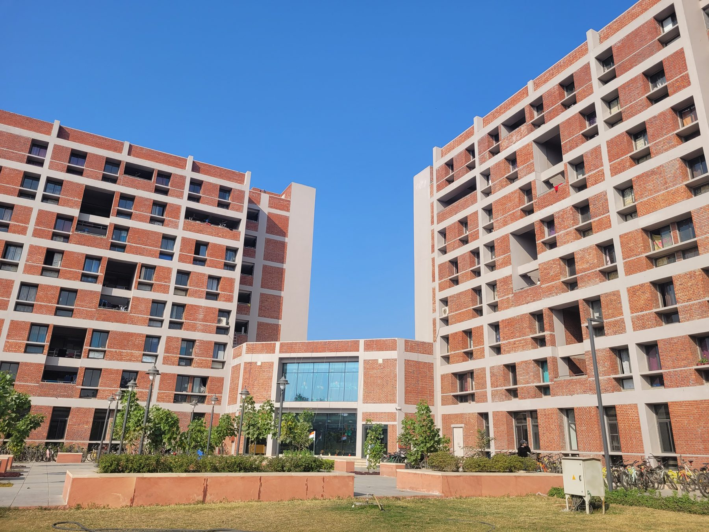
Hostel building and courtyard
Dronagiri hostel exterior · IIT Delhi Board for Hostel Management
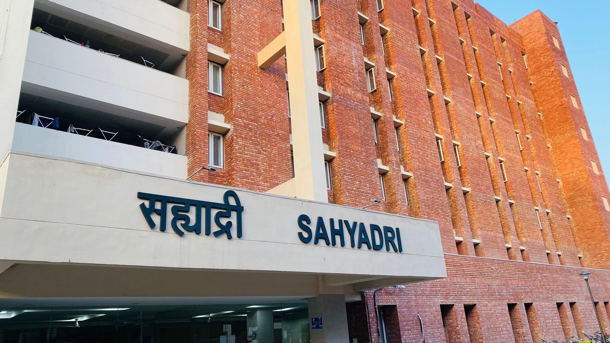
Sahyadri hostel building
Sahyadri hostel exterior · IIT Delhi Board for Hostel Management
Natural places & wildlife
Garden, greenery and campus wildlife. The captions distinguish nature from building views.
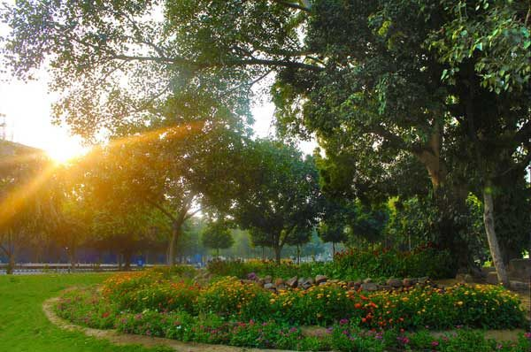
Garden at IIT Delhi campus
Campus garden · Wikimedia Commons
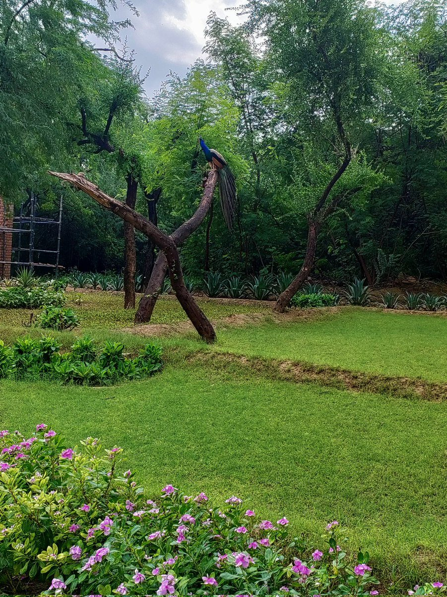
Peacock among campus trees
Peacock on campus · IIT Delhi social post
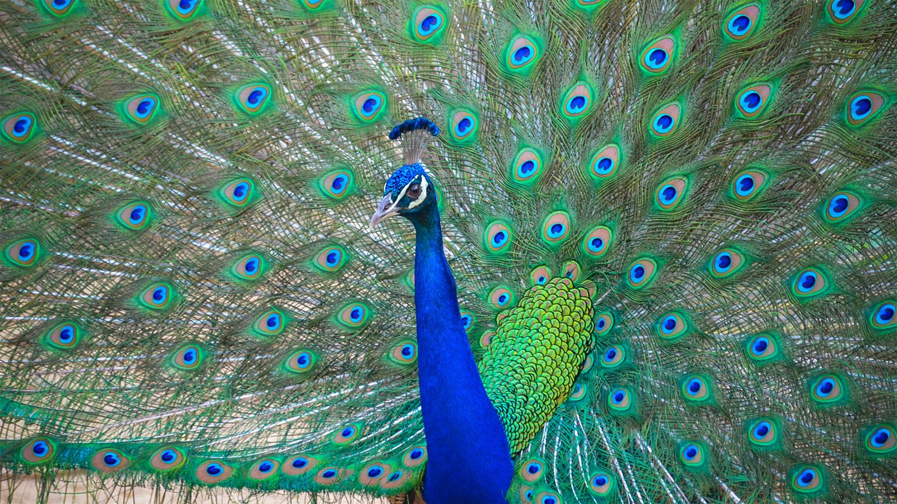
Indian peafowl at IIT Delhi
Campus wildlife · Wikimedia Commons
Hostel mess & dining
Student dining photographs from IIT Delhi hostel mess life.
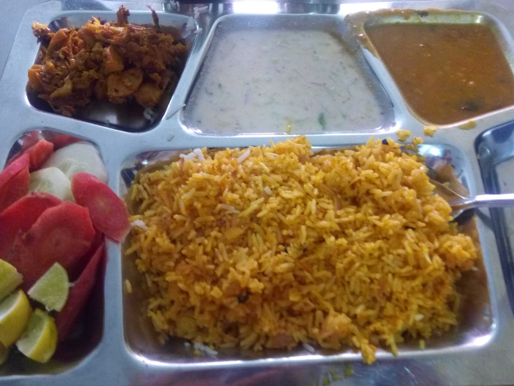
Hostel food at IIT Delhi
Hostel food, 2017 · Wikimedia Commons
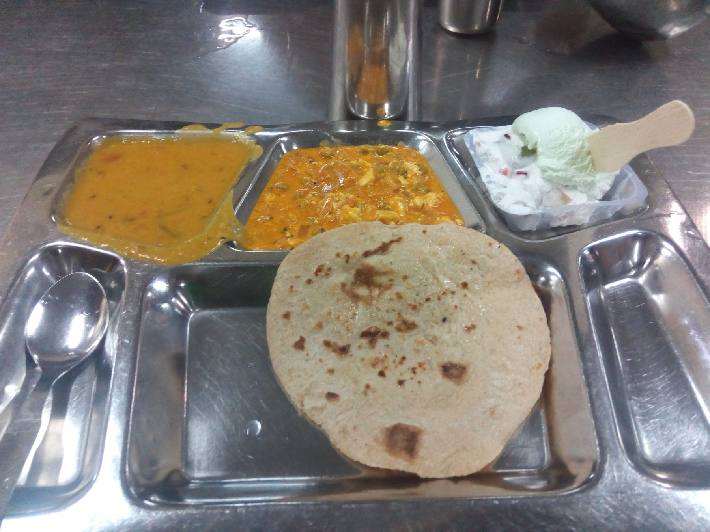
Hostel food at Nilgiri hostel
Hostel food, Nilgiri · Wikimedia Commons
Cultural programmes & student groups
Music, performance and student community moments.
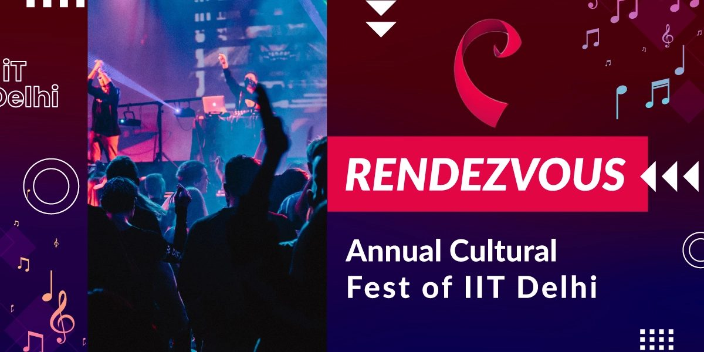
Students performing at a campus cultural programme
Student performance · IIT Delhi photo gallery
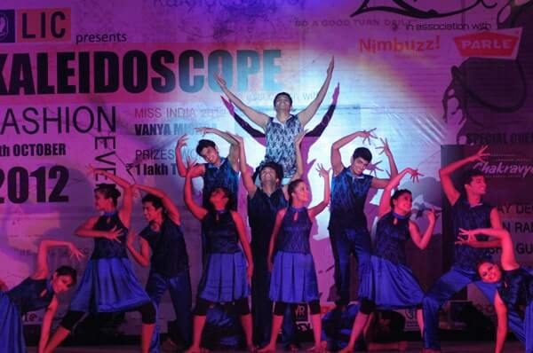
Cultural programme at IIT Delhi
Cultural event · IIT Delhi
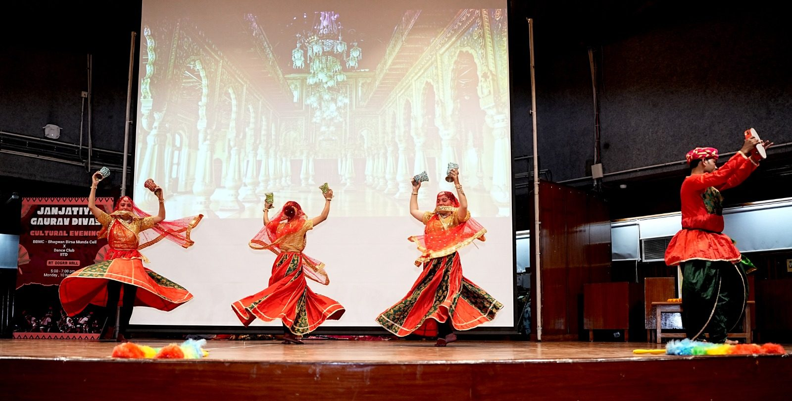
Campus cultural gathering
Cultural event · IIT Delhi

Students at a campus celebration
Community event · IIT Delhi
Science events & projects
Research, experiments and hands-on project demonstrations.

Open House project demonstrations
Open House 2024 · IIT Delhi

Experiment in the IIT Delhi RC Lab
Research lab experiment · Wikimedia Commons
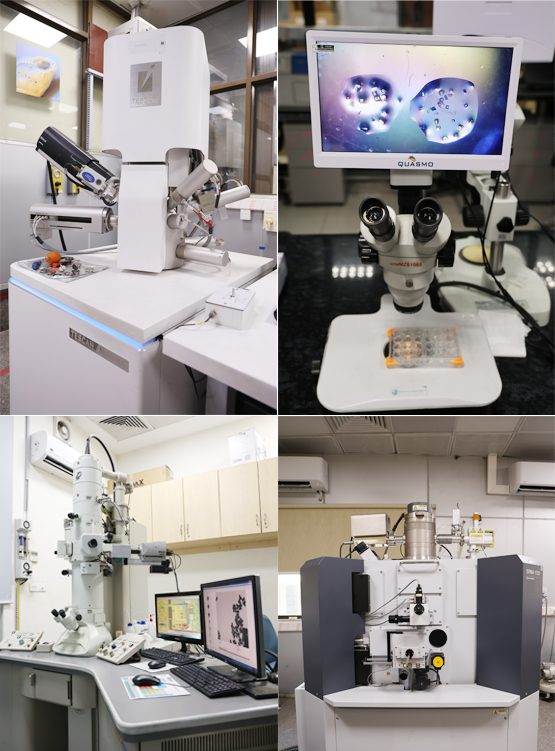
Research and innovation at IIT Delhi
Research showcase · IIT Delhi

IIT Delhi research showcase
Research event · IIT Delhi
Festivals & campus events
Festival crowds, celebrations and campus milestones.
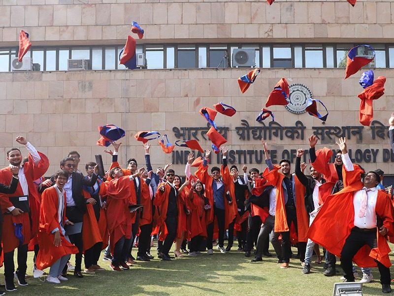
IIT Delhi convocation gathering
Convocation · IIT Delhi gallery
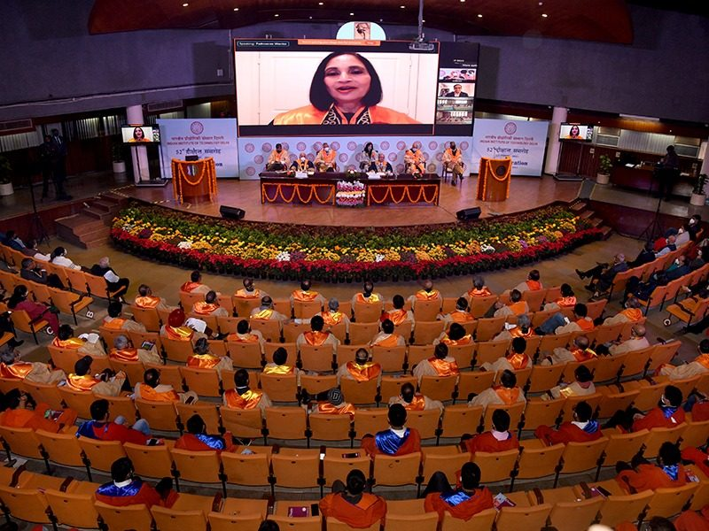
Graduation celebration at IIT Delhi
Convocation · IIT Delhi gallery
Guest and cultural event
Campus event · IIT Delhi
See the wider gallery
Browse additional campus, science and event photographs.
Open full photo gallery